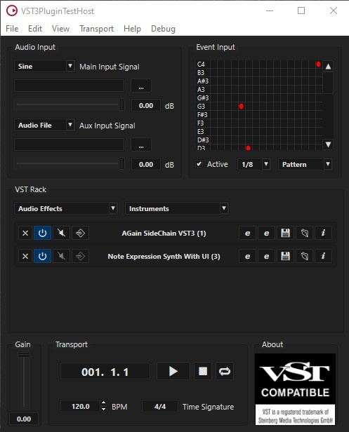
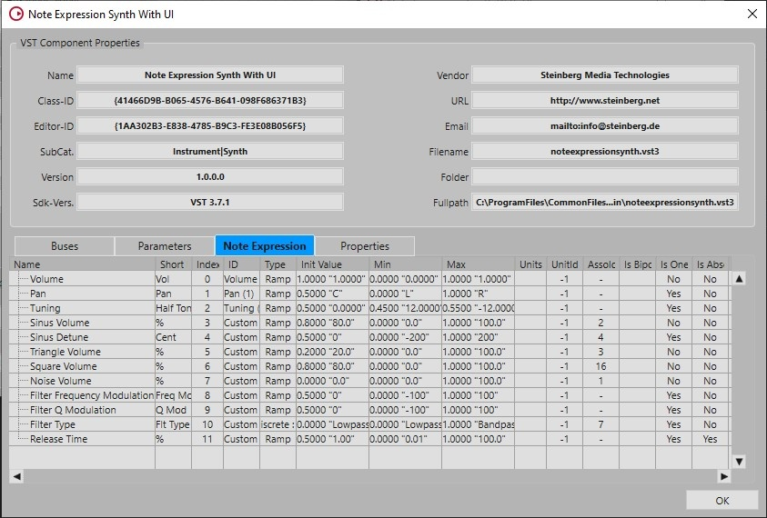
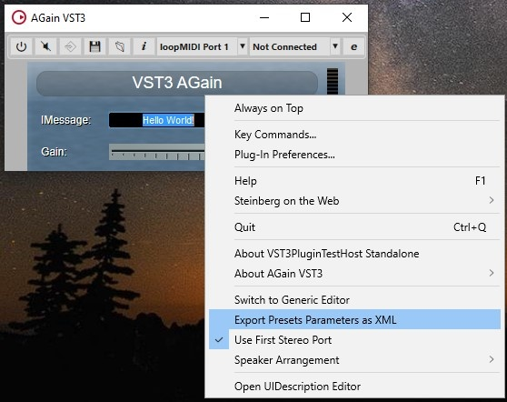

/ VST Home / What is the VST 3 SDK?
VST 3 Plug-in Test Host
On this page:
[[TOC]]
Related pages:
Introduction
The SDK provides a test application called VST3PluginTestHost for Apple macOS X (x86_64/Apple M1) and Microsoft Windows (64bits).
This application allows you to load a plug-in, simulates some inputs (Audio and Event) and acts like a small VST 3 host application based on an ASIO driver.
Included in this application is a test module which allows you to check your plug-in in regard to the VST 3 standard.

Check the folder "bin" of the SDK!
How to use it?
- View -> Open Plug-in Information Window: opens a window showing all registered component and controller VST 3 plug-ins.
- View -> Open Plug-in Unit Tests Window: opens a window where you can test your plug-in with a series of unit tests.
- View -> Open Preset Editor: allows you to open, check and modify VST 3 presets (adding meta attributes like in Instrument/- Style/Character)
- File -> Convert VST 3 Preset to VST 2 preset (fxp or fxb): allow to convert VST 3 Presets to compatible VST 2 Presets.
- File -> Overwrite Plug-in Name in VST 3 Presets: allow to rename the plug-in name in a set of VST 3 Presets.

Dark Mode version
VST Player Window
Audio Input
In this section you can select the audio source of your plug-in for the Main Input Audio Bus and for the Aux Input Audio Bus (Side-chain: if available) between:
- A sine wave
- Noise
- Silence
- ASIO Input (first stereo)
- An Audio File (in this case use the browser (... button) to choose the file (wave, aiff))
A Volume slider allows you to control the level of the source.
Event Input
This section simulates note events sent to the plug-in.
- A pattern could be defined and initialized with randomized, chromatic or manual events. (for Chromatic choose the start note in the pattern and select Chromatic in the pop-up menu).
- Active check box: enable/disable the playback of this pattern.
- You can choose different loop stepping for this pattern (1, 1/2, ...1/32)
VST Rack
This section allows you to load serialized multiple plug-ins. Each plug-in will be loaded in a slot.
- To load a plug-in (Audio or Instrument) click on the associated pop-up menu and select one plug-in.
- To unload a plug-in, click on its associated X button on its slot.
For each loaded plug-in in a slot you can:
- Enable/disable the plug-in with the On button.
- Bypass/process the plug-in with the Byp button (if available as parameter).
- Enable/disable the Side-chain bus with the Aux button (available only if the plug-in has input Side-chain).
- Open its editor with the Edit button.
- Save a Preset with the Store button.
- Load a Preset with the Load button.
- Open the information page of this plug-in with the Info button (see below).
Info Window
- Information window of AGain plug-in showing the Parameters panel:

- Information window of NoteExpressionSynth plug-in showing the Note Expression panel:

- Information window of AGain plug-in showing the Properties panel:

Context Menu
Right click on the opened plug-in opens a context menu which allows to trigger some actions:

- Switch to Generic Editor: open the generic editor instead of the one provided by the plug-in.
- Export Presets Parameters as XML: load automatically all available VST 3 Presets for this plug-in and create a readable XML file for each preset including the parameter states.
Transport
In this section you can:
| • set the gain of the output audio • control the transport state (Loop/Start/Stop/Rewind) • change the tempo and signature |  |
|---|
VST 3 Plug-ins Tests Window

In this window you can select a specific test branch for a specific plug-in. You can navigate in the test tree (left part), then click on the button Run Selected to process only the selected tests.
There are 2 kinds of tests concerning the way the plug-in is instantiated:
- Global Instance: only one instance of the plug-in will be instantiated for all tests.
- Local Instances: for each test a new instance of the plug-in will be instantiated.
We define currently 2 sets of test:
- VST 3 Conformity
- Special Features
You can run all available tests with Run All. It is possible also to disable some tests with the check box in the left view.
Error reports will be displayed in the Errors view. In the Messages View some warnings (or some plug-in limitations), test results and progress are displayed.
In this version of this Plug-in Test Host, the tests are limited to the main VST 3 features, in future version the test coverage will be extended.
Preset Editor

With this editor you can load and modify VST 3 presets created with the Store button of the VST Rack by adding some meta-attributes.